首頁 › 課程筆記 › 第 4 章 統計推論（檢定、信賴區間 ）、模擬、迴歸 的 p 值 ，背後都是機率分配 。R 為每一種分配都準備了四個函數 ，命名規則完全一致：學會一種分配，其他分配就會了。這一章用二項分配和常態分配說明，再補上 Poisson 分配（第 7 章 Poisson 迴歸會用到）與亂數的基本觀念；最後一節用模擬說明標準誤 、信賴區間與 p 值，這是第 6 章讀迴歸報表、第 14 章 A/B 測試 的基礎。
4.1 四個前綴：d、p、q、r對任何一種分配（名稱縮寫記作 xxx，例如 binom、norm、pois、t、chisq），R 都有四個函數：
函數
英文
回答的問題
二項分配例子 \(X\sim B(5, 0.25)\)
dxxx(x, ...)density
剛好等於 x 的機率（連續分配是密度）
dbinom(2, 5, 0.25)：\(P(X=2)\)
pxxx(q, ...)probability（累積）
小於等於 q 的機率 \(P(X\le q)\)
pbinom(2, 5, 0.25)：\(P(X\le 2)\)
qxxx(p, ...)quantile
累積機率是 p 時，對應的值是多少
qbinom(0.5, 5, 0.25)：中位數
rxxx(n, ...)random
從這個分配抽 n 個亂數
rbinom(10, 5, 0.25)：抽 10 次
複製 ▶ 執行 R dbinom ( 2 , size = 5 , prob = 0.25 ) # P(X = 2)
## [1] 0.2637複製 ▶ 執行 R pbinom ( 2 , size = 5 , prob = 0.25 ) # P(X <= 2) = P(0) + P(1) + P(2)
## [1] 0.8965複製 ▶ 執行 R sum ( dbinom ( 0 : 2 , 5 , 0.25 )) # 驗證：把 d 加起來就是 p
## [1] 0.8965複製 ▶ 執行 R qbinom ( 0.5 , size = 5 , prob = 0.25 ) # 累積機率到 50% 的值
## [1] 1複製 ▶ 執行 R set.seed ( 2026 )
rbinom ( 10 , size = 5 , prob = 0.25 ) # 抽 10 個亂數
## [1] 2 1 0 1 1 0 1 2 1 1
p 和 q 互為反函數：p 從「值」算出「累積機率」，q 從「累積機率」反推「值」。參數名稱依分配而不同：二項是 size（試驗次數 n）和 prob（成功機率 p）；常態是 mean 和 sd；Poisson 是 lambda。
重點 一句話記住 d = 單點機率（或密度）、p = 累積機率（左尾面積）、q = 反查分位數（臨界值）、r = 產生亂數。
Concept Check：4.1 四個前綴：d、p、q、r 題目照期末考的題型自編（選擇、填空、簡答、寫程式），不是老師出的題目。選擇與填空用英文題幹，附中文題意。
Which R function returns \(P(X \le 3)\) for \(X \sim \text{Binomial}(10, 0.2)\)?
(A) dbinom(3, 10, 0.2)(B) qbinom(3, 10, 0.2)(C) rbinom(3, 10, 0.2)(D) pbinom(3, 10, 0.2)顯示解答 中文題意
哪個函數計算 \(P(X\le 3)\)？
答案 (D) pbinom(3, 10, 0.2)
解析
累積機率用 p 開頭。dbinom(3, ...) 是 \(P(X=3)\)；qbinom() 的第一個引數是機率而不是值；rbinom(3, ...) 是抽 3 個亂數。
For the standard normal distribution, qnorm(pnorm(1.2)) returns:
(A) 0.885(B) 1.2(C) 0.115(D) -1.2顯示解答 中文題意
qnorm(pnorm(1.2)) 回傳什麼？
答案 (B) 1.2
解析
pnorm(1.2) 得到左尾機率 0.885，qnorm() 再把這個機率反推回值，所以回到 1.2。p 和 q 互為反函數。
To generate 100 random numbers from a normal distribution with mean 50 and standard deviation 10, use ________(100, mean = 50, sd = 10).
顯示解答 中文題意
產生 100 個平均 50、標準差 10 的常態亂數，要用哪個函數？
答案 rnorm
解析
r 開頭產生亂數，norm 是常態分配。注意 R 的常態分配參數是標準差 sd，不是變異數。
A salesperson closes each call with probability 0.3, independently. Out of 10 calls, compute (a) the probability of exactly 3 sales and (b) the probability of at most 3 sales.
顯示解答 中文題意
每通電話成交機率 0.3，打 10 通：(a) 剛好 3 筆、(b) 最多 3 筆成交的機率。
答案 複製 ▶ 執行 R dbinom ( 3 , size = 10 , prob = 0.3 )
## [1] 0.2668複製 ▶ 執行 R pbinom ( 3 , size = 10 , prob = 0.3 )
## [1] 0.6496解析
「剛好」用 d（點機率），「最多」是累積機率用 p。
4.2 亂數與 set.seed()電腦產生的「亂數」其實是用演算法算出來的偽亂數 ：給定起點（種子，seed），之後的序列就固定了。
複製 ▶ 執行 R set.seed ( 1 ); rnorm ( 3 )
## [1] -0.6265 0.1836 -0.8356複製 ▶ 執行 R set.seed ( 1 ); rnorm ( 3 ) # 同樣的種子，得到完全一樣的結果
## [1] -0.6265 0.1836 -0.8356複製 ▶ 執行 R rnorm ( 3 ) # 沒有重設，接著產生下一批
## [1] 1.5953 0.3295 -0.8205
做模擬、切訓練集 與測試集 （第 8 章）時，先寫 set.seed(某個數字)，別人照著跑才會得到一樣的結果——這叫可重現性 。
種子的數字本身沒有意義，選什麼都可以。
sample()：從一組值中抽樣複製 ▶ 執行 R set.seed ( 2026 )
sample ( 1 : 10 , 3 ) # 不放回抽 3 個
## [1] 9 1 6複製 ▶ 執行 R sample ( c ( "H" , "T" ), 5 , replace = TRUE ) # 放回抽 5 次（擲硬幣）
## [1] "H" "H" "H" "T" "T"複製 ▶ 執行 R sample ( 1 : 3 ) # 只給一個向量：打亂順序
## [1] 1 3 2複製 ▶ 執行 R sample ( c ( "A" , "B" ), 10 , replace = TRUE , prob = c ( 0.8 , 0.2 )) # 不等機率
## [1] "B" "A" "A" "A" "A" "A" "A" "A" "A" "A"
預設 replace = FALSE（不放回），抽的個數不能超過總數。
prob 指定每個值被抽中的機率。 Concept Check：4.2 亂數與 set.seed() 題目照期末考的題型自編（選擇、填空、簡答、寫程式），不是老師出的題目。選擇與填空用英文題幹，附中文題意。
Why do we call set.seed(123) before generating random numbers?
(A) To make the random numbers truly unpredictable (B) To make the results reproducible when the code is rerun (C) To make the generated numbers follow a normal distribution (D) To limit the random numbers to values below 123 顯示解答 中文題意
產生亂數前為什麼要 set.seed(123)？
答案 (B) To make the results reproducible when the code is rerun
解析
固定種子後，每次執行都得到同一串亂數，結果可以被重現。種子不會改變分配，也不會限制數值範圍。
Which code simulates rolling a fair die 20 times?
(A) sample(1:6, 20, replace = FALSE)(B) sample(1:20, 6, replace = TRUE)(C) rbinom(20, size = 6, prob = 0.5)(D) sample(1:6, 20, replace = TRUE)顯示解答 答案 (D) sample(1:6, 20, replace = TRUE)
解析
每次擲骰子都可能出現 1～6，同一個點數可以重複出現，所以要放回。(A) 不放回，從 6 個值抽 20 個會出錯；(B) 是從 1～20 抽 6 個，弄反了；(C) 是二項分配，值是 0～6 且不是每個點數等機率。
Use set.seed(1) and draw 5 numbers from 1 to 49 without replacement, like a lottery draw. Run the two lines twice and check the results are identical.
顯示解答 中文題意
設種子 1，從 1～49 不放回抽 5 個號碼，執行兩次確認結果相同。
答案 複製 ▶ 執行 R set.seed ( 1 ); sample ( 1 : 49 , 5 )
## [1] 4 39 1 34 23複製 ▶ 執行 R set.seed ( 1 ); sample ( 1 : 49 , 5 )
## [1] 4 39 1 34 23解析
同一個種子產生同一串亂數，抽樣結果可以重現。樂透號碼不能重複，所以用預設的不放回（replace = FALSE）。
You run sample(1:6, 3) twice without set.seed(). What happens?
(A) The two results are always identical, since R remembers them (B) The two results will usually differ from each other (C) R returns an error because a seed has not been set (D) Both results are always the numbers 1, 2 and 3 顯示解答 中文題意
沒設 set.seed() 就執行兩次 sample(1:6, 3)，會怎樣？
答案 (B) The two results will usually differ from each other
解析
沒設種子時，R 依目前的亂數狀態繼續產生，每次結果通常不同。報告或作業要求結果可重現時，就要先設種子。
4.3 二項分配什麼是二項分配
做 \(n\) 次獨立試驗，每次成功機率都是 \(p\)，成功次數 \(X\) 服從二項分配 \(X\sim B(n,p)\)：
\[P(X=k)=\binom{n}{k}p^k(1-p)^{n-k},\qquad k=0,1,\dots,n\]
平均數 \(E(X)=np\)、變異數 \(Var(X)=np(1-p)\)。例如：顧客點進廣告的機率 0.25，10 位顧客中有幾位點擊。
用 dbinom() 畫機率分配
複製 R p <- 0.25 ; n <- 10
dbinom ( 0 : 10 , n , p ) %>% round ( 4 )
## [1] 0.0563 0.1877 0.2816 0.2503 0.1460 0.0584 0.0162 0.0031 0.0004
## [10] 0.0000 0.0000複製 R barplot ( dbinom ( 0 : 10 , n , p ), names.arg = 0 : 10 ,
xlab = "# of success" , ylab = "Probability" )
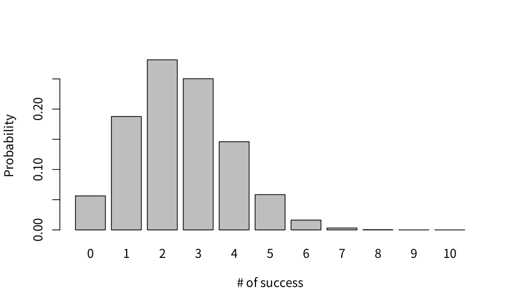
dbinom(0:10, n, p)：一次算出成功 0 次到 10 次的機率，得到 11 個數字，加起來等於 1。barplot() 畫長條圖 ；names.arg 設定每根長條下方的標籤。最可能是 2 次（np = 2.5 附近），超過 6 次的機率已經非常小。
用 ggplot2 畫
複製 R data.pmf <- tibble ( k = 0 : n , prob = dbinom ( 0 : n , n , p ))
ggplot ( data.pmf , aes ( x = k , y = prob )) +
geom_bar ( stat = "identity" ) +
ggtitle ( "PMF for X ~ B(10, 0.25)" ) +
xlab ( "number of success" ) + ylab ( "Probability" )
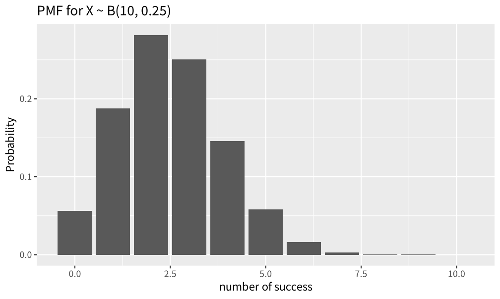
先把機率整理成一個 tibble：一欄 k、一欄 prob。ggplot2 畫圖需要資料框 。
geom_bar(stat = "identity")：長條高度直接用 y 的值。不寫的話，geom_bar() 會自己去「數」每個 x 出現幾次。老師講義用 map_dbl(0:n, dbinom, n, p)（purrr 套件 ，把 dbinom 逐一套到 0～n），結果和直接 dbinom(0:n, n, p) 一樣，因為 dbinom 本身就是向量化的。
用亂數逼近累積分配
複製 R set.seed ( 2026 )
data.cdf <- tibble ( x = rbinom ( 5000 , 10 , 0.25 )) # 抽 5000 個
ggplot ( data.cdf , aes ( x = x )) +
stat_ecdf () + # 經驗累積分配函數
ggtitle ( "Empirical CDF for X ~ B(10, 0.25)" )
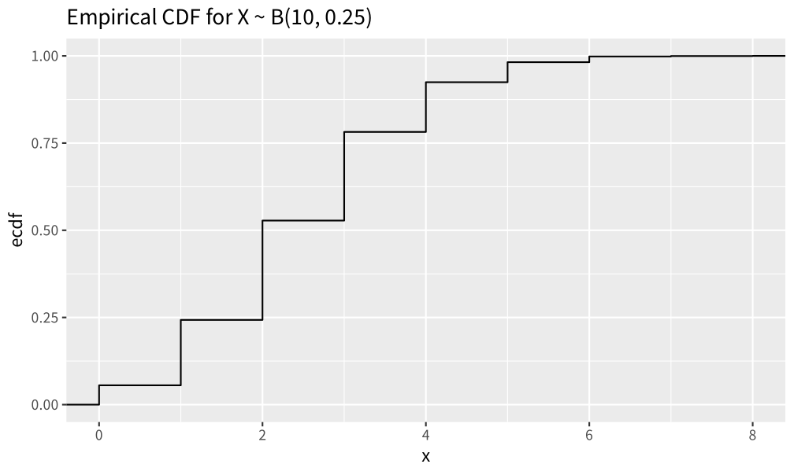
複製 R mean ( data.cdf $ x <= 3 ) # 模擬的 P(X <= 3)
## [1] 0.782複製 ▶ 執行 R pbinom ( 3 , 10 , 0.25 ) # 理論值
## [1] 0.7759stat_ecdf() 畫出「樣本中小於等於 x 的比例」，樣本夠大時會非常接近真正的累積分配 \(P(X\le x)\)。這是「用模擬驗證理論」的思路。
常見問題的寫法
複製 ▶ 執行 R pbinom ( 3 , 20 , 0.1 ) # 至多 3 個：P(X <= 3)
## [1] 0.867複製 ▶ 執行 R 1 - pbinom ( 3 , 20 , 0.1 ) # 至少 4 個：P(X >= 4) = 1 - P(X <= 3)
## [1] 0.133複製 ▶ 執行 R pbinom ( 3 , 20 , 0.1 , lower.tail = FALSE ) # 同上：lower.tail = FALSE 是 P(X > 3)
## [1] 0.133複製 ▶ 執行 R pbinom ( 5 , 20 , 0.1 ) - pbinom ( 1 , 20 , 0.1 ) # 2 到 5 個：P(2 <= X <= 5)
## [1] 0.597常見錯誤 離散分配的「至少」 \(P(X\ge 4)\) 是 1 - pbinom(3, ...)，不是 1 - pbinom(4, ...)。因為 \(P(X\ge 4) = 1 - P(X\le 3)\)，X 只能是整數。
Concept Check：4.3 二項分配 題目照期末考的題型自編（選擇、填空、簡答、寫程式），不是老師出的題目。選擇與填空用英文題幹，附中文題意。
For \(X\sim B(20, 0.1)\), which code computes \(P(X \ge 2)\)?
(A) 1 - pbinom(2, 20, 0.1)(B) pbinom(2, 20, 0.1, lower.tail = FALSE)(C) 1 - pbinom(1, 20, 0.1)(D) dbinom(2, 20, 0.1)顯示解答 答案 (C) 1 - pbinom(1, 20, 0.1)
解析
\(P(X\ge 2)=1-P(X\le 1)\)，所以是 1 - pbinom(1, ...)。(A) 和 (B) 都是 \(P(X\ge 3)\)（也就是 \(P(X>2)\)）；(D) 只是 \(P(X=2)\)。
In ggplot(data.pmf, aes(k, prob)) + geom_bar(stat = "identity"), what does stat = "identity" do?
(A) Uses the prob values directly as the heights of the bars (B) Counts how many times each value of k appears in data (C) Sorts the bars from the most to the least probable (D) Converts the probabilities into cumulative probabilities 顯示解答 中文題意
stat = "identity" 的作用是什麼？
答案 (A) Uses the prob values directly as the heights of the bars
解析
geom_bar() 預設 stat = "count"，會數每個 x 出現的次數。資料裡已經算好高度（機率）時，要用 stat = "identity"；也可以改用 geom_col()，它預設就是 identity。
Explain the idea of using rbinom() and stat_ecdf() to approximate the CDF of a binomial distribution.
顯示解答 中文題意
說明用 rbinom() 搭配 stat_ecdf() 逼近二項分配 CDF 的想法。
答案 rbinom() 從二項分配抽出大量樣本，stat_ecdf() 對每個值 x 計算「樣本中小於等於 x 的比例」，畫成經驗累積分配函數。根據大數法則，樣本數越大，這個比例越接近真正的機率 \(P(X\le x)\)，所以經驗 CDF 會逼近理論 CDF。這個方法在沒有公式、或想驗證公式時特別有用。
解析
第 3 章撲克牌的例子、第 8 章的 bootstrap 都是同樣的精神：用電腦重複模擬來近似機率或抽樣分配。
A product has a defect rate of \(p = 0.1\), and a batch has 20 items. Plot the PMF of the number of defective items with dbinom(), and use pbinom() to find the probability of at most 3 defects.
顯示解答 中文題意
不良率 0.1、一批 20 個：畫出不良品數的 PMF，並求至多 3 個不良品的機率。
答案 複製 ▶ 執行 R x <- 0 : 20
pmf <- dbinom ( x , size = 20 , prob = 0.1 )
plot ( x , pmf , type = "h" , lwd = 3 ,
main = "Binomial(20, 0.1) PMF" ,
xlab = "Number of defective items" , ylab = "P(X = x)" )
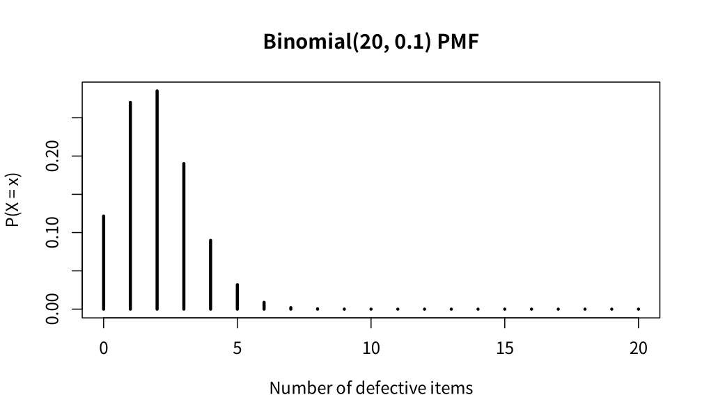
複製 ▶ 執行 R pbinom ( 3 , size = 20 , prob = 0.1 )
## [1] 0.867解析
老師講義的課後練習。plot(..., type = "h") 畫垂直線（histogram-like），很適合離散分配；lwd 是線寬。至多 3 個的機率約 0.867。
4.4 常態分配常態分配 \(X\sim N(\mu,\sigma^2)\) 是最重要的連續分配，鐘形、左右對稱。標準常態 \(Z\sim N(0,1)\) 是平均 0、標準差 1 的特例。
R 的常態函數用 mean 和 sd（標準差 ）當參數：dnorm(x, mean = 0, sd = 1)，預設就是標準常態。
尾端機率與臨界值
複製 ▶ 執行 R pnorm ( 1.96 ) # P(Z <= 1.96)，左尾面積
## [1] 0.975複製 ▶ 執行 R pnorm ( 1.96 , lower.tail = FALSE ) # P(Z > 1.96)，右尾面積
## [1] 0.025複製 ▶ 執行 R qnorm ( 0.05 , lower.tail = FALSE ) # 右尾面積 0.05 的臨界值
## [1] 1.645複製 ▶ 執行 R qnorm ( 0.975 ) # 左尾 0.975，也就是雙尾 5% 的臨界值
## [1] 1.96複製 ▶ 執行 R pnorm ( 1.96 ) - pnorm ( -1.96 ) # P(-1.96 < Z < 1.96)
## [1] 0.95
lower.tail = TRUE（預設）算左尾 \(P(X\le x)\)；FALSE 算右尾 \(P(X>x)\)。1.96 和 1.645 就是查常態表得到的數字：雙尾 5% 的臨界值是 ±1.96，單尾 5% 是 1.645。pnorm／qnorm 做的就是查表這件事。
一般常態要先標準化 ，或直接把 mean、sd 給進去：
複製 ▶ 執行 R # 身高 X ~ N(170, 8^2)，P(X > 185) = ?
pnorm ( 185 , mean = 170 , sd = 8 , lower.tail = FALSE )
## [1] 0.0304複製 ▶ 執行 R pnorm (( 185 - 170 ) / 8 , lower.tail = FALSE ) # 標準化後查標準常態，答案相同
## [1] 0.0304複製 ▶ 執行 R qnorm ( 0.9 , mean = 170 , sd = 8 ) # 身高前 10% 的門檻
## [1] 180.3畫密度曲線
複製 R # X ~ N(mean = 2, variance = 4)，所以 sd = sqrt(4) = 2
range.pdf <- tibble ( x = c ( 2 - 6 , 2 + 6 )) # 平均 ± 3 個標準差
ggplot ( range.pdf , aes ( x = x )) +
stat_function ( fun = dnorm , args = list ( mean = 2 , sd = sqrt ( 4 ))) +
ggtitle ( "PDF for X ~ N(2, 4)" )
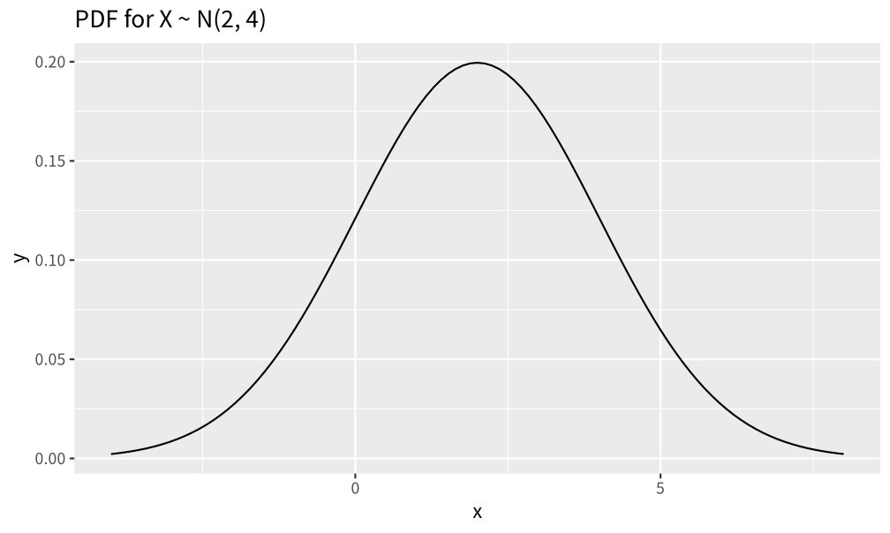
stat_function(fun = dnorm, args = list(...))：直接畫出函數曲線，args 傳入分配參數。資料框只是用來告訴 ggplot x 軸的範圍；平均 ±3 個標準差涵蓋約 99.7% 的機率。
畫 CDF 只要把 dnorm 換成 pnorm：
複製 R ggplot ( range.pdf , aes ( x = x )) +
stat_function ( fun = pnorm , args = list ( mean = 2 , sd = 2 )) +
ggtitle ( "CDF for X ~ N(2, 4)" )
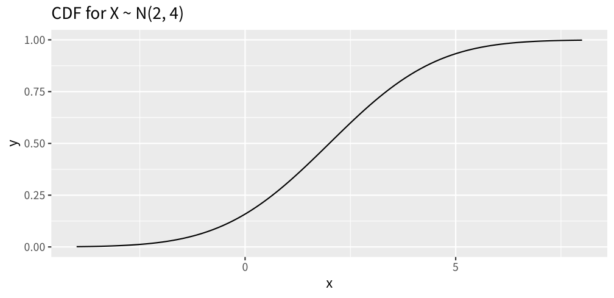
直方圖與核密度估計
複製 ▶ 執行 R set.seed ( 2026 )
x <- rnorm ( 10000 , mean = 2 , sd = 4 )
hist ( x , breaks = 40 , main = "Histogram of 10000 draws from N(2, 16)" )
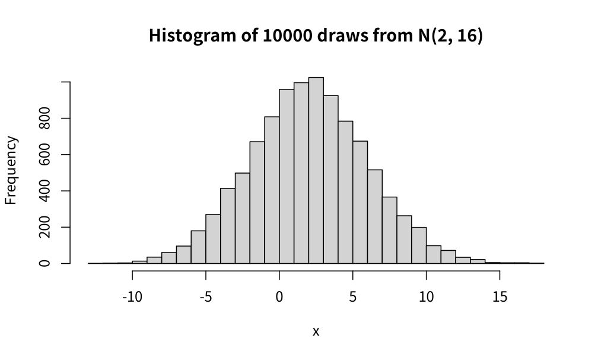
複製 R plot ( density ( x ), main = "Kernel density estimate" )
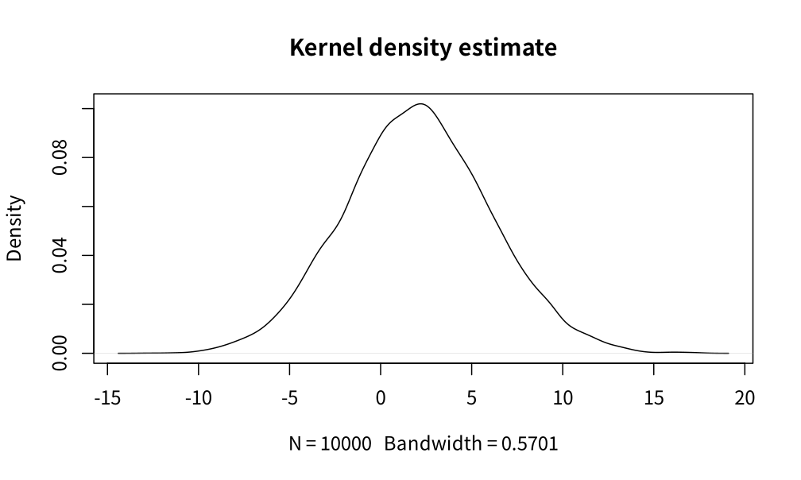
hist() 把資料切成很多個區間，數每個區間有幾個值；breaks 控制大約切幾段。density() 是核密度估計 （kernel density estimation）：用平滑曲線估計資料的分配形狀，不受分箱方式影響。
兩者疊在一起最常見——直方圖 要改用「密度」當 y 軸（probability = TRUE），曲線才對得上：
複製 ▶ 執行 R set.seed ( 123 )
height <- rnorm ( 1000 , mean = 170 , sd = 8 )
hist ( height , probability = TRUE , breaks = 25 ,
col = "lightblue" , border = "white" ,
main = "Simulated Heights" , xlab = "Height (cm)" )
lines ( density ( height ), col = "red" , lwd = 2 ) # 核密度估計
curve ( dnorm ( x , 170 , 8 ), add = TRUE , lty = 2 , lwd = 2 ) # 理論密度
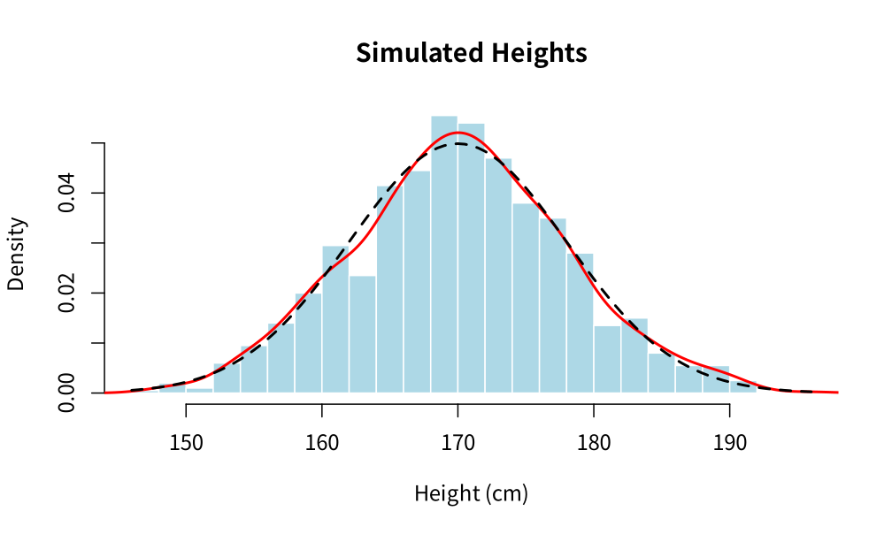
lines()、curve(..., add = TRUE) 會疊在已經畫好的圖 上，不會開新圖。lty = 2 是虛線；lwd 是線寬。 Concept Check：4.4 常態分配 題目照期末考的題型自編（選擇、填空、簡答、寫程式），不是老師出的題目。選擇與填空用英文題幹，附中文題意。
Which code returns \(P(Z > 1.645)\) for the standard normal distribution?
(A) pnorm(1.645)(B) qnorm(1.645, lower.tail = FALSE)(C) dnorm(1.645)(D) pnorm(1.645, lower.tail = FALSE)顯示解答 中文題意
哪一行計算標準常態的 \(P(Z>1.645)\)？
答案 (D) pnorm(1.645, lower.tail = FALSE)
解析
右尾機率用 pnorm(..., lower.tail = FALSE)，結果約 0.05，也等於 1 - pnorm(1.645)。(A) 是左尾；(B) qnorm 的第一個引數要放機率；(C) 是該點的密度高度，不是機率。
\(X \sim N(10, 9)\) where 9 is the variance . Which code computes \(P(X < 13)\)?
(A) pnorm(13, mean = 10, sd = 9)(B) pnorm(13, mean = 10, sd = 3)(C) pnorm(13, mean = 10, sd = 81)(D) qnorm(13, mean = 10, sd = 3)顯示解答 中文題意
X 的變異數是 9，哪一行計算 \(P(X<13)\)？
答案 (B) pnorm(13, mean = 10, sd = 3)
解析
R 的參數是標準差，sd = √9 = 3。結果是 pnorm(1) ≈ 0.841。把變異數直接當 sd 是很常見的錯誤。
The two critical values of a two-sided 95% confidence interval under the standard normal distribution can be obtained with ________(c(0.025, 0.975)).
顯示解答 中文題意
雙尾 95% 信賴區間的兩個標準常態臨界值，用哪個函數求得？
答案 qnorm
解析
qnorm(c(0.025, 0.975)) 得到 -1.96 和 1.96：中間包住 95% 的機率，兩邊各留 2.5%。這是老師講義的課後練習。
複製 ▶ 執行 R qnorm ( c ( 0.025 , 0.975 ))
## [1] -1.96 1.96For a standard normal variable \(Z\), compute \(P(-1.96 < Z < 1.96)\). Then, for monthly sales \(X \sim N(500, 80^2)\), compute the probability that sales are between 400 and 600.
顯示解答 中文題意
計算 \(P(-1.96<Z<1.96)\)；再算月銷售量 \(X\sim N(500, 80^2)\) 介於 400 和 600 之間的機率。
答案 複製 ▶ 執行 R pnorm ( 1.96 ) - pnorm ( -1.96 )
## [1] 0.95複製 ▶ 執行 R pnorm ( 600 , 500 , 80 ) - pnorm ( 400 , 500 , 80 )
## [1] 0.7887解析
「介於 a 和 b 之間」= 左尾到 b 的面積減掉左尾到 a 的面積。第二題標準化後是 \(P(-1.25<Z<1.25)\)。
4.5 Poisson 分配與其他分配Poisson 分配：計數資料
Poisson 分配 描述「一段時間或空間內，事件發生的次數」，例如一小時內進店的顧客數、一個月的客訴件數。參數 \(\lambda\) 是平均次數：
\[P(X=k)=\frac{e^{-\lambda}\lambda^k}{k!},\qquad E(X)=Var(X)=\lambda\]
平均數等於變異數 是 Poisson 的重要特性，第 7 章檢查「過度離散」就是在檢查這件事。
複製 ▶ 執行 R dpois ( 3 , lambda = 2 ) # 平均 2 次，剛好 3 次的機率
## [1] 0.1804複製 ▶ 執行 R ppois ( 3 , lambda = 2 ) # 至多 3 次
## [1] 0.8571複製 ▶ 執行 R set.seed ( 2026 )
y <- rpois ( 10000 , lambda = 2 )
c ( mean = mean ( y ), var = var ( y )) # 平均與變異數都接近 2
## mean var
## 1.998 2.003複製 R barplot ( table ( y ) / length ( y ), xlab = "count" , ylab = "Proportion" ,
main = "10000 draws from Poisson(2)" )
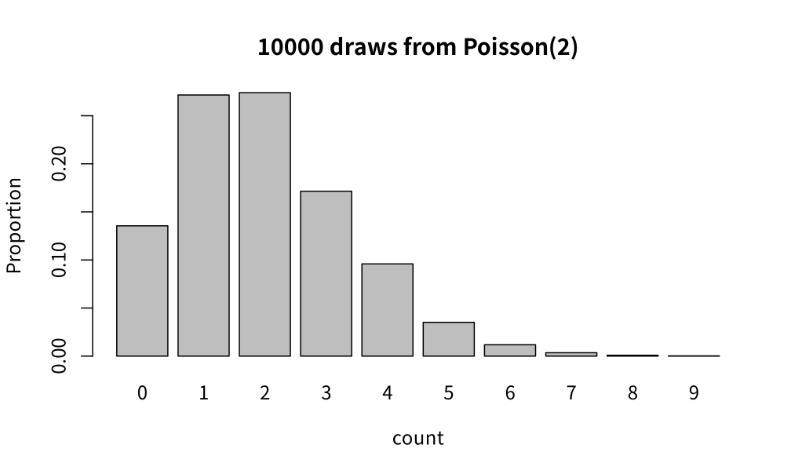
常用分配與函數名稱
分配
縮寫
參數
常見用途
二項 Binomial
binomsize, probn 次中成功幾次
Poisson
poislambda計數
常態 Normal
normmean, sd連續資料、近似
均勻 Uniform
unifmin, max模擬
t 分配
tdf小樣本平均數檢定、迴歸係數
卡方 Chi-square
chisqdf變異數、配適度、GLM 偏差
F 分配
fdf1, df2ANOVA 、迴歸整體檢定
所以 runif()、pt()、qchisq() 等都是同樣規則組出來的名字：
複製 ▶ 執行 R 2 * pt ( -2.1 , df = 18 ) # t = 2.1、自由度 18 的雙尾 p 值
## [1] 0.05009複製 ▶ 執行 R qt ( 0.975 , df = 18 ) # 自由度 18 的 t 臨界值（比 1.96 大）
## [1] 2.101複製 ▶ 執行 R pchisq ( 30 , df = 20 , lower.tail = FALSE ) # 卡方右尾機率（第 7 章配適度檢定）
## [1] 0.06985第 3 章自己寫的兩樣本 t 檢定 ，p 值就是 2 * pt(-abs(t), df = n1 + n2 - 2)：t 分配左尾面積乘 2。
Concept Check：4.5 Poisson 分配與其他分配 題目照期末考的題型自編（選擇、填空、簡答、寫程式），不是老師出的題目。選擇與填空用英文題幹，附中文題意。
Which property is a key assumption of the Poisson distribution?
(A) The mean is equal to the variance (B) The variance is the square of the mean (C) The outcome can take negative values (D) The distribution is always symmetric 顯示解答 中文題意
下列何者是 Poisson 分配的重要特性？
答案 (A) The mean is equal to the variance
解析
Poisson 的平均數和變異數都是 λ。計數不會是負的；λ 小時分配右偏，不對稱。實際資料若變異數遠大於平均數，就是「過度離散」，第 7 章會處理。
Following R's naming rule, the function that gives the cumulative probability of a t distribution is _ _
顯示解答 中文題意
依照 R 的命名規則，t 分配的累積機率函數是什麼？均勻分配的亂數函數是什麼？
解析
前綴 p + 分配縮寫 t；前綴 r + 分配縮寫 unif。
Customers arrive at a store at an average rate of 4 per hour. (a) Compute the probability that exactly 6 customers arrive in an hour. (b) Simulate 10,000 hours with rpois() and estimate the probability that more than 6 customers arrive; compare it with the exact value.
顯示解答 中文題意
平均每小時 4 位顧客：(a) 剛好 6 位的機率；(b) 模擬一萬小時，估計超過 6 位的機率並和理論值比較。
答案 複製 ▶ 執行 R dpois ( 6 , lambda = 4 )
## [1] 0.1042複製 ▶ 執行 R set.seed ( 2026 )
sim <- rpois ( 10000 , lambda = 4 )
mean ( sim > 6 )
## [1] 0.1126複製 ▶ 執行 R ppois ( 6 , lambda = 4 , lower.tail = FALSE )
## [1] 0.1107解析
mean(sim > 6)：邏輯向量的平均就是 TRUE 的比例。理論值 \(P(X>6)=1-P(X\le 6)\)，用 lower.tail = FALSE 直接算右尾。
Which variable is best modeled by a Poisson distribution?
(A) Whether a customer buys or not on one visit (B) The proportion of all voters who support a new policy (C) The height in centimeters of adult customers (D) The number of calls a help desk receives per hour 顯示解答 中文題意
哪一個變數最適合用 Poisson 分配描述？
答案 (D) The number of calls a help desk receives per hour
解析
Poisson 描述「一段時間或空間內發生幾次」的計數。(A) 是 0／1（伯努利、二項）；(C) 是連續數值（常態）；(B) 是比例。
4.6 從分配到檢定：標準誤、信賴區間與 p 值前面幾節都是「已知分配，算機率」。實際做分析時方向剛好相反：手上只有一份樣本 ，想知道背後的母體 （例如所有顧客）長什麼樣子。第 6 章迴歸報表裡的 Std. Error、t value、Pr(>|t|)，第 14 章 A/B 測試的 p 值與信賴區間，都建立在這一節的三個觀念上。這裡先用模擬把它們看清楚，後面的章節就不會只是背規則。
樣本會變，估計值也會變：抽樣分配與標準誤
假設某間咖啡店所有顧客的等待時間（母體）平均 5 分鐘、標準差 2 分鐘。我們每天只能隨機問 30 位顧客，算出一個樣本平均 。今天問到的 30 人和明天不同，樣本平均也就不同。把「每天抽 30 人、算平均」重複一萬次，看樣本平均會怎麼分布：
複製 ▶ 執行 R set.seed ( 2026 )
xbar <- replicate ( 10000 , mean ( rnorm ( 30 , mean = 5 , sd = 2 ))) # 一萬個樣本平均
mean ( xbar ) # 樣本平均的平均：很接近母體平均 5
## [1] 5.006複製 R sd ( xbar ) # 樣本平均的標準差：就是「標準誤」
## [1] 0.3665複製 ▶ 執行 R 2 / sqrt ( 30 ) # 理論值 σ / √n
## [1] 0.3651
replicate(10000, ...)：把括號裡的程式重複執行一萬次，收集每次的結果（第 3 章 3.7）。一萬個樣本平均形成的分配叫抽樣分配 （sampling distribution）：估計值因為「抽到哪些人」而產生的變動。
抽樣分配的標準差叫標準誤 （standard error，SE），衡量估計值本身 有多不準。它和資料的標準差不同：資料的標準差是 2 分鐘（顧客之間差多少），樣本平均的標準誤只有約 0.37 分鐘（每天算出的平均差多少）。
樣本平均的標準誤是 \(\sigma/\sqrt n\)：樣本越大越準，但要讓標準誤減半，樣本要變成 4 倍 。實務上不知道 \(\sigma\)，就用樣本標準差 \(s\) 代替：\(SE=s/\sqrt n\)。
複製 R hist ( xbar , breaks = 40 , main = "一萬個樣本平均的分布" , xlab = "樣本平均（分鐘）" )
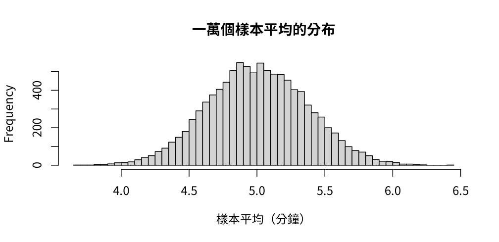
抽樣分配長得像常態分配。這不是巧合：中央極限定理 （central limit theorem）說，只要樣本夠大，不論母體原本是什麼形狀，樣本平均的分配都會接近常態。這就是為什麼常態分配與 t 分配在統計推論裡到處出現。
信賴區間：估計值加減「幾個標準誤」
只有一份樣本時，我們用「樣本平均 ± 幾個標準誤」畫出一個範圍，叫信賴區間 （confidence interval）。95% 信賴區間是
\[\bar x \pm t_{0.975,\;n-1}\times \frac{s}{\sqrt n}\]
其中 \(t_{0.975,\,n-1}\) 是自由度 \(n-1\) 的 t 分配 97.5% 分位數（4.5 節的 qt()），樣本 30 人時約 2.05，和常態的 1.96 很接近。
複製 ▶ 執行 R set.seed ( 7 )
wait <- rnorm ( 30 , mean = 5 , sd = 2 ) # 今天問到的 30 位顧客
n <- length ( wait ); se <- sd ( wait ) / sqrt ( n )
mean ( wait ) + c ( -1 , 1 ) * qt ( 0.975 , df = n - 1 ) * se # 自己算的 95% 信賴區間
## [1] 4.950 6.633複製 R t.test ( wait ) $ conf.int # R 內建的結果，相同
## [1] 4.950 6.633
## attr(,"conf.level")
## [1] 0.95
c(-1, 1) * ...：一次算出「減」和「加」兩端。t.test(x)$conf.int：t.test() 回傳一個 list，$conf.int 取出信賴區間。
95% 的意思不是 「真實平均有 95% 的機率落在這個區間」——真實平均是固定的數字，不是隨機的。正確意思是：用同樣的方法重複抽樣很多次，算出來的區間大約有 95% 會包住真實平均。用模擬直接驗證：
複製 ▶ 執行 R set.seed ( 11 )
cover <- replicate ( 2000 , {
x <- rnorm ( 30 , mean = 5 , sd = 2 )
ci <- t.test ( x ) $ conf.int
ci [ 1 ] <= 5 & 5 <= ci [ 2 ] # 這次的區間有沒有包住真實平均 5
})
mean ( cover ) # 大約 0.95
## [1] 0.9485自由度 （degrees of freedom）是 t 分配的參數，大致是「樣本數減去已經估計的參數個數」。算 \(s\) 時先用掉了一個樣本平均，所以是 \(n-1\)。自由度越大，t 分配越接近標準常態。
假設檢定與 p 值
店長宣稱「平均等待不超過 5 分鐘」，顧客抱怨等很久。要判斷資料支不支持「平均其實不是 5」，假設檢定的步驟是：
寫下虛無假設 （null hypothesis）\(H_0:\mu=5\)（沒有差異），和對立假設 \(H_1:\mu\ne 5\)。
算檢定統計量 ：估計值和 \(H_0\) 差了幾個標準誤，\(t=\dfrac{\bar x-5}{s/\sqrt n}\)。
算 p 值 （p-value）：假設 \(H_0\) 是真的 ，看到「和手上資料一樣極端、或更極端」的 t 的機率。
和事先訂的顯著水準 \(\alpha\)（通常 0.05）比較：p 值 < \(\alpha\) 就拒絕 \(H_0\)，說結果顯著 （statistically significant）。
複製 ▶ 執行 R set.seed ( 5 )
wait2 <- rnorm ( 30 , mean = 6 , sd = 2 ) # 假設真實平均其實是 6 分鐘
t_stat <- ( mean ( wait2 ) - 5 ) / ( sd ( wait2 ) / sqrt ( 30 ))
t_stat
## [1] 2.824複製 R 2 * pt ( - abs ( t_stat ), df = 29 ) # 雙尾 p 值：兩邊尾巴的面積
## [1] 0.008478複製 R t.test ( wait2 , mu = 5 ) $ p.value # 和內建函數相同
## [1] 0.008478
2 * pt(-abs(t), df)：t 分配左尾面積（pt()）乘 2，因為「比 5 大很多」和「比 5 小很多」都算極端（雙尾）。這裡 p 值約 0.008，小於 0.05，所以拒絕「平均是 5 分鐘」：如果平均真的是 5，抽到這麼極端的樣本的機率不到 1%。
常見錯誤 p 值最常見的三個誤解
p 值不是「\(H_0\) 為真的機率」 。它是「假設 \(H_0\) 為真時，資料這麼極端的機率」，條件的方向剛好相反。p 值大不代表 \(H_0\) 是對的 ，只代表資料不足以推翻它（可能是樣本太小）。顯著不等於重要 。樣本非常大時，再小的差異（例如平均多 3 秒）都會顯著；差異大小要看估計值本身與信賴區間。 檢定可能犯兩種錯：\(H_0\) 其實是真的卻拒絕了，叫型一錯誤 ，機率就是 \(\alpha\)；\(H_0\) 是假的卻沒拒絕，叫型二錯誤 。「真的有差異時能偵測到的機率」叫檢定力，第 14 章 A/B 測試會用它決定樣本數。
在後面的章節會看到哪裡
這一節的觀念
第 6 章 summary(lm(...)) 報表
第 14 章 A/B 測試
估計值
Estimate（迴歸係數）兩組平均或比例的差
標準誤
Std. Errort.test()、prop.test() 內部計算
檢定統計量
t value = Estimate ÷ Std. Errort、z、卡方統計量
p 值
Pr(>|t|)，檢定 \(H_0\)：係數 = 0$p.value
信賴區間
confint(fit)$conf.int
重點 本節重點
估計值會隨樣本而變；估計值的標準差叫標準誤 ，樣本平均的標準誤是 \(s/\sqrt n\)。
95% 信賴區間 ≈ 估計值 ± 約 2 個標準誤；「95%」講的是方法的成功率。
p 值 = 假設 \(H_0\) 為真時，資料這麼極端的機率；小於 0.05 就拒絕 \(H_0\)。顯著只代表不太像巧合，不代表差異大。
Concept Check：4.6 從分配到檢定：標準誤、信賴區間與 p 值 題目照期末考的題型自編（選擇、填空、簡答、寫程式），不是老師出的題目。選擇與填空用英文題幹，附中文題意。
A test of \(H_0:\mu=5\) gives p = 0.03. Which statement is correct?
(A) There is only a 3% chance that \(H_0\) is actually true here (B) If \(H_0\) were true, data this extreme would occur about 3% of the time (C) There is a 97% chance that the true mean of the waits is not 5 (D) The difference from 5 is large enough to matter for the store in practice 顯示解答 中文題意
檢定 \(H_0:\mu=5\) 得到 p = 0.03，哪一個說法正確？
答案 (B) If \(H_0\) were true, data this extreme would occur about 3% of the time
解析
p 值是「假設 \(H_0\) 為真」之下，看到這麼極端資料的機率。(A)(C) 把條件的方向弄反了，p 值不是 \(H_0\) 為真的機率；(D) 顯著不代表差異大到有實務意義，要看估計值與信賴區間。
The standard error of a sample mean is 0.8 with n = 25. If the sample size becomes n = 100 (same population), the standard error is about:
(A) 0.2 (B) 0.4 (C) 0.8 (D) 1.6 顯示解答 中文題意
n = 25 時樣本平均的標準誤是 0.8，樣本變成 100 時標準誤大約是多少？
解析
標準誤 \(=\sigma/\sqrt n\)。樣本變 4 倍，\(\sqrt n\) 變 2 倍，標準誤變一半：0.8 ÷ 2 = 0.4。(A) 誤以為和 n 成反比；(D) 方向相反。
For a 95% confidence interval of a mean with n = 20, the multiplier is the t quantile ________(0.975, df = ________).
顯示解答 中文題意
樣本 20 筆、平均數的 95% 信賴區間，乘數用哪個函數、自由度是多少？
解析
分位數用前綴 q；平均數的 t 區間自由度是 \(n-1=19\)。qt(0.975, 19) 約 2.09。
Using x <- c(52, 48, 55, 61, 47, 58, 53, 50), test \(H_0:\mu=50\) by hand: compute the standard error, the t statistic, and the two-sided p-value. Then confirm with t.test().
顯示解答 中文題意
用這 8 筆資料檢定平均是否為 50：自己算標準誤、t 統計量與雙尾 p 值，再用 t.test() 確認。
答案 複製 ▶ 執行 R x <- c ( 52 , 48 , 55 , 61 , 47 , 58 , 53 , 50 )
se <- sd ( x ) / sqrt ( length ( x ))
t <- ( mean ( x ) - 50 ) / se
p <- 2 * pt ( - abs ( t ), df = length ( x ) - 1 )
c ( se = se , t = t , p = p )
## se t p
## 1.711 1.753 0.123複製 R t.test ( x , mu = 50 ) $ p.value
## [1] 0.123解析
步驟就是本節的公式：標準誤 \(s/\sqrt n\) → \(t=(\bar x-\mu_0)/SE\) → 雙尾 p 值 2 * pt(-abs(t), df)。p 值大於 0.05，不能拒絕平均是 50。
易錯提醒
雙尾檢定要乘 2，而且要對 \(-|t|\) 取左尾；寫成 pt(t, df) 在 t 為正時會得到接近 1 的數字。
An online store with 2 million visitors finds that a new button raises the average order value by $0.03, with p < 0.001. The manager says "the effect is highly significant, so it is a big improvement." Explain what is wrong.
顯示解答 中文題意
兩百萬名訪客的資料顯示新按鈕讓平均訂單金額多 0.03 美元，p < 0.001，經理說「非常顯著，所以是很大的改進」。這句話錯在哪裡？
答案 p 值很小只表示這個差異不太可能是抽樣造成的巧合；樣本非常大時，標準誤非常小，再小的差異都會顯著。改進大不大要看差異本身（0.03 美元）與信賴區間，並考慮改版成本，這裡的差異在實務上幾乎沒有意義。
解析
「顯著」回答「有沒有差異」，效果大小回答「差多少」。報告結果時兩者都要寫。
4.7 本章小結
每個分配有 d／p／q／r 四個函數：密度或點機率、累積機率、分位數、亂數。
lower.tail = FALSE 算右尾；離散分配的「至少 k」要用 1 - p(k - 1)。常態分配的參數是 sd，不是變異數；臨界值用 qnorm()，p 值用 pnorm()。
set.seed() 讓亂數可重現；sample() 抽樣，擲骰子之類要 replace = TRUE。用 hist()、density()、stat_ecdf() 看模擬資料；用 stat_function()、curve() 畫理論曲線。
Poisson 用於計數，平均數 = 變異數 = λ。
估計值的標準差叫標準誤（\(s/\sqrt n\)）；95% 信賴區間約是估計值 ± 2 個標準誤；p 值是「假設 \(H_0\) 為真時資料這麼極端的機率」，小於 0.05 就拒絕 \(H_0\)。